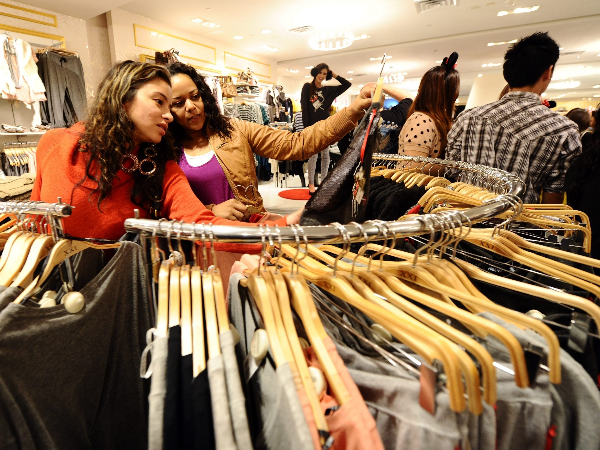

"This site is dedicated to anyone who wants to practice sustainability while being a college student. We offer simple strategies, ways to get involved at the University of Michigan, and in-depth step-by-step guides to composting and reducing plastic consumption. Our desire is to create a space for creativity, exploration, and fun in the pursuit of sustainability. The Earth deserves it!"
1. Compost!
2. Cut Down on Plastic Use
3. Recycle, Recycle .. Everything and Anything!
4. Walk or Bike (if you can)
5. Make Conscious Consumer Choices

6. Get Involved in Programs on Campus
7. Shop Locally
8. Grow Your Own
9. Attend a Climate Rally